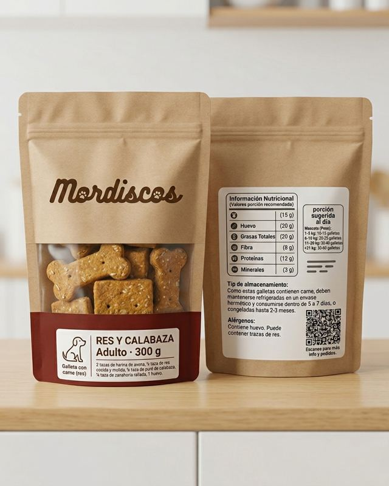
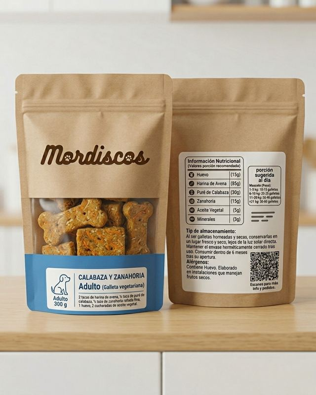
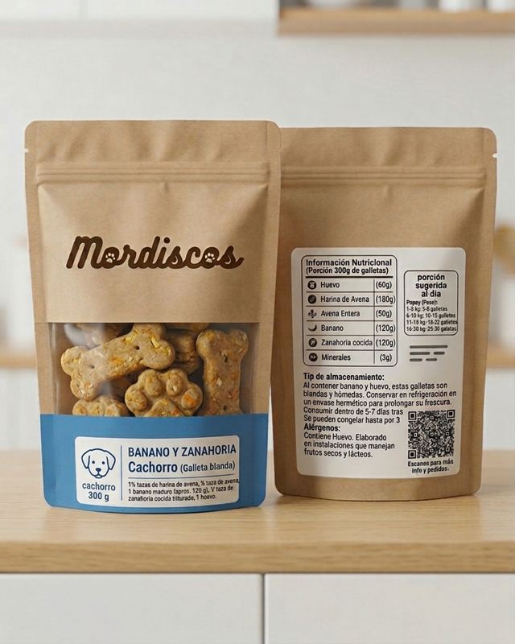

Premios que cuidan a tu perro
Galletas y bizcochos caseros, con ingredientes simples y sin sal, azúcar ni conservantes artificiales. Hechos para cada etapa y tamaño de tu mejor amigo.


¿Qué es Mordiscos?
Mordiscos es una marca de snacks saludables para perros en Tegucigalpa. Creemos que el premio también puede ser nutritivo: usamos avena, calabaza, camote, zanahoria, manzana, banano y carnes cocidas sin sal ni condimentos.
Tenemos dos líneas, vegetariana y con carne, y una receta pensada para cada tipo de perro: cachorro, adulto, raza pequeña, raza grande, senior y sensibilidad digestiva.
Ingredientes simples
Pocos ingredientes que puedes reconocer.
Horneado fresco
Sin conservantes artificiales.
Para cada perro
6 recetas según etapa y tamaño.
Porción medida
Un complemento, no un reemplazo.
Dos líneas, un snack para cada perro
🌿 Línea vegetariana
Avena, huevo y vegetales o fruta.🍖 Línea con carne
Pollo, pavo o res cocidos y sin grasa.Productos del lanzamiento (PMV)

Banano y zanahoria
Galleta blanda y húmeda, ideal para encías en crecimiento. Bolsa de 300 g.
Calabaza y zanahoria
Galleta crujiente con fibra y sabor suave. Bolsa de 300 g.
Res y calabaza
Galleta crujiente con res cocida, proteína y mucho sabor. Bolsa de 300 g.
Las demás recetas se irán sumando después del lote piloto.
Peso ideal y snack recomendado
Cuéntanos de tu perro y te decimos si está en su peso ideal, cuántos snacks puede comer al día y qué producto Mordiscos le conviene.
¿Cuánto snack al día?
Los snacks son un complemento: máximo el 10 % de las calorías diarias. Valores estimados para un perro adulto esterilizado con actividad normal.
| Peso ideal | Energía diaria | Máximo en snacks (10 %) | Producto sugerido | Piezas al día |
|---|
⚖️ Cómo dar los premios
- Repártelos en el día, no todos juntos.
- Si hoy comió más premios, baja un poco su comida.
- Cachorros: se calcula con su peso actual.
🐕 Perro con sobrepeso
- Prefiere la línea vegetariana.
- Usa la porción de su peso ideal.
- Consulta a tu veterinario para un plan.
⚠️ Alérgenos
- Todos los productos llevan huevo.
- Los bizcochos llevan yogur natural.
- El pavo es ave: si hay alergia al pollo, consulta al veterinario.
Cómo cuidar tus Mordiscos
No llevan conservantes artificiales, así que dura menos que un snack industrial. Así se mantienen frescos.
Galletas vegetarianas
En envase hermético, en un lugar fresco y seco, lejos del sol.
Con carne y bizcochos
Refrigerados en envase hermético.
Congelados
Congela las galletas con carne y los bizcochos. Descongela solo lo que vas a usar.
✅ Buenas prácticas
- Cierra bien la bolsa después de cada uso.
- Déjalos enfriar por completo antes de guardarlos.
- Las galletas blandas (cachorro y senior) se refrigeran.
🚩 Descarta si…
- Notas moho o manchas.
- Huelen agrio o raro.
- Pasó su tiempo de consumo.